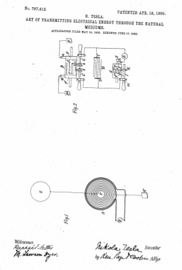

Descarga la patente original en esté enlace


Que se sepa que yo, Nikola Tesla, ciudadano de los Estados Unidos, residente en el distrito de Manhattan, en la ciudad, condado y estado de Nueva York, he descubierto una mejora nueva y útil en el arte de transmitir energía eléctrica a través de los Medios Naturales de los que se detalla a continuación, haciendo referencia a los dibujos que acompañan y forman parte de los mismos.
Se sabe desde hace mucho tiempo que las corrientes eléctricas pueden propagarse a través de la tierra, y este conocimiento se ha utilizado de muchas formas en la transmisión de señales y el funcionamiento de una variedad de dispositivos receptores alejados de la fuente de energía, principalmente con el objeto de prescindir de un cable conductor de retorno. También se sabe que las perturbaciones eléctricas pueden transmitirse a través de partes de la tierra conectando a tierra solo uno de los polos de la fuente, y este hecho lo he utilizado en sistemas que he ideado con el propósito de transmitir a través de los medios naturales inteligibles. señales o energía y que ahora son familiares; pero todos los experimentos y observaciones realizados hasta ahora han tendido a confirmar la opinión sostenida por la mayoría de los científicos de que la tierra, debido a su inmensa extensión, aunque posee propiedades conductoras, no se comporta a la manera de un conductor de dimensiones limitadas con respecto a las perturbaciones producidas, sino, por el contrario, muy parecido a un vasto embalse u océano, que, si bien puede ser perturbado localmente por una conmoción de algún tipo permanece inactivo e inactivo en gran parte o como un todo. Otro hecho más ahora de conocimiento común es que cuando las ondas eléctricas u oscilaciones se imprimen en una ruta conductora como un cable metálico, la reflexión tiene lugar en ciertas condiciones desde los extremos del cable, y como consecuencia de la interferencia de los impresos y reflejados. oscilaciones se produce el fenómeno de “ondas estacionarias” con máximos y mínimos en posiciones fijas definidas. En cualquier caso, la existencia de estas ondas indica que algunas de las ondas salientes han alcanzado los límites de la ruta de conducción y se han reflejado desde la misma. Porque he descubierto que a pesar de sus vastas dimensiones y contrariamente a todas las observaciones hechas hasta ahora, el globo terrestre puede en gran parte o en su totalidad comportarse hacia las perturbaciones impresas en él de la misma manera que un conductor de tamaño limitado, este hecho ha sido demostrado por fenómenos novedosos que describiré a continuación.
En el curso de ciertas investigaciones que llevé a cabo con el propósito de estudiar los efectos de las descargas de rayos sobre la condición eléctrica de la tierra, observé que los instrumentos receptores sensibles dispuestos de manera que sean capaces de responder a las perturbaciones eléctricas creadas por las descargas en ocasiones no respondieron cuando deberían haberlo hecho, y al investigar las causas de este comportamiento inesperado descubrí que se debía al carácter de las ondas eléctricas que fueron producidas en la tierra por las descargas de rayos y que tenían regiones nodales siguiendo en distancias definidas la fuente cambiante de las perturbaciones. A partir de los datos obtenidos en un gran número de observaciones de los máximos y mínimos de estas ondas, encontré que su longitud variaba aproximadamente de veinticinco a setenta kilómetros. y estos resultados y ciertas deducciones teóricas me llevaron a la conclusión de que ondas de este tipo pueden propagarse en todas direcciones por el globo y que pueden ser de longitudes aún más ampliamente diferentes, siendo los límites extremos impuestos por las dimensiones y propiedades físicas de la tierra. Reconociendo en la existencia de estas ondas una evidencia inequívoca de que las perturbaciones creadas habían sido conducidas desde su origen hasta las partes más remotas del globo y desde allí se habían reflejado, concibí la idea de producir tales ondas en la tierra por medios artificiales con el objeto de utilizarlos para muchos fines útiles para los que son o podrían resultar aplicables. Este problema se volvió extremadamente difícil debido a las inmensas dimensiones del planeta, y consecuentemente un enorme movimiento de electricidad o velocidad a la que la energía eléctrica tenía que ser entregada para aproximar, incluso en un grado remoto, movimientos o velocidades que se alcanzan manifiestamente en las manifestaciones de fuerzas eléctricas en la naturaleza y que al principio parecían irrealizables por cualquier persona. agencias humanas; sino mediante mejoras graduales y continuas de un generador de oscilaciones eléctricas, que he descrito en mis patentes de Estados Unidos Nos.645,576 y 649,621, Finalmente logré alcanzar movimientos eléctricos o tasas de entrega de energía eléctrica no solo aproximadas, sino, como se muestra en muchas pruebas y mediciones comparativas, superando en realidad a las descargas de rayos, y por medio de este aparato he encontrado que es posible reproducir siempre que se desee fenómenos en la tierra iguales o similares a los debidos a tales descargas. Con el conocimiento de los fenómenos descubiertos por mí y los medios a mi alcance para lograr estos resultados, estoy capacitado no solo para realizar muchas operaciones mediante el uso de instrumentos conocidos, sino también para ofrecer una solución a muchos problemas importantes que involucran la operación o el control. de dispositivos remotos que por falta de este conocimiento y la ausencia de estos medios han sido completamente imposibles hasta ahora. Por ejemplo, mediante el uso de dicho generador, por lo general, ilustraré la manera de aplicar mi descubrimiento describiendo uno de los usos específicos del mismo, a saber, la transmisión de señales o mensajes inteligibles entre puntos distantes, y con este objeto ahora se hace referencia a los dibujos adjuntos, en los que:
La figura 1 representa esquemáticamente el generador que produce ondas estacionarias en la tierra y la figura 2 un aparato situado en una localidad remota para registrar los efectos de estas ondas.
En la figura 1, A designa una bobina primaria que forma parte de un transformador y que consta generalmente de unas pocas vueltas de un cable robusto de resistencia inapreciable, cuyos extremos están conectados a los terminales de una fuente de potentes oscilaciones eléctricas, representada esquemáticamente por G. Esta fuente suele ser un condensador cargado a un potencial alto y descargado en rápida sucesión a través del primario, como en un tipo de transformador inventado por mí y ahora bien conocido; pero cuando se desea producir ondas estacionarias de grandes longitudes, se puede usar una dinamo alterna de construcción adecuada para energizar el primario A. C es una bobina secundaria enrollada en espiral dentro del primario que tiene el extremo más cercano a este último conectado al suelo E y el otro extremo a un terminal elevado D. Las constantes físicas de la bobina C, que determinan su período de vibración, se eligen y ajustan de tal manera que el sistema secundario ECD esté en la resonancia más cercana posible con las oscilaciones impresas en él por el primario A. Es, además, de la mayor importancia para mejorar aún más el aumento de presión y aumentar el movimiento eléctrico en el sistema secundario que su resistencia sea lo más pequeña posible y su autoinducción lo más grande posible en las condiciones impuestas. El terreno debe hacerse con mucho cuidado, con el objeto de reducir su resistencia. En lugar de estar directamente puesto a tierra, como se indica, la bobina C puede estar unida en serie o de otro modo al primario A, en cuyo caso este último estará conectado a la placa E; pero ya sea que ninguna o una parte o todas las espiras primarias o excitantes estén incluidas en la bobina C, la longitud total del conductor desde la placa de tierra E hasta la terminal elevada D debe ser igual a un cuarto de la longitud de onda de la perturbación eléctrica en el sistema ECD o bien igual a esa longitud multiplicada por un número impar. Observada esta relación, el terminal D se hará coincidir con los puntos de máxima presión en el circuito secundario o excitado, y en el mismo se producirá el mayor flujo de electricidad. Para magnificar el movimiento eléctrico en el secundario tanto como sea posible, es esencial que su conexión inductiva con el primario A no sea muy íntima, como en los transformadores ordinarios, sino suelta, para permitir una oscilación libre, es decir, para digamos, su inducción mutua debería ser pequeña. La forma espiral de la bobina C asegura esta ventaja, mientras que las espiras cercanas al primario A están sujetas a una fuerte acción inductiva y desarrollan una alta fuerza electromotriz inicial. Cumplidos estos ajustes y relaciones y observados rigurosamente otras características constructivas indicadas, el movimiento eléctrico producido en el sistema secundario por la acción inductiva del primario A se magnificará enormemente, siendo el aumento directamente proporcional a la inductancia y frecuencia e inversamente a la Resistencia del sistema secundario. He encontrado que es factible producir de esta manera un movimiento eléctrico miles de veces mayor que el inicial, es decir, el que se imprime en el secundario por el primario A y así he alcanzado actividades o tasas de flujo de energía eléctrica en el sistema ECD medido por muchas decenas de miles de caballos de fuerza. Tales inmensos movimientos de electricidad dan lugar a una variedad de fenómenos nuevos y sorprendentes, entre los que se encuentran los ya descritos. Las poderosas oscilaciones eléctricas en el sistema ECD que se comunican al suelo hacen que las vibraciones correspondientes se propaguen a partes distantes del globo, desde donde se reflejan y, por interferencia con las vibraciones salientes, producen ondas estacionarias cuyas crestas y huecos se encuentran en círculos paralelos. con respecto a lo que la placa de tierra E puede considerarse el polo. Dicho de otra manera, el conductor terrestre entra en resonancia con las oscilaciones impresas en él como un cable. Más que esto, una serie de hechos comprobados por mí muestran claramente que el movimiento de la electricidad a través de ella sigue ciertas leyes con un rigor casi matemático. Por el momento bastará con afirmar que el planeta se comporta como un conductor perfectamente liso o pulido de inapreciable resistencia con capacidad y autoinducción uniformemente distribuida a lo largo del eje de simetría de propagación de ondas y que transmite oscilaciones eléctricas lentas sin distorsión y atenuación sensibles.
Además de los tres requisitos anteriores, parecen ser esenciales para el establecimiento de la condición de resonancia.
Primero: El diámetro de la tierra que pasa por el polo debe ser un múltiplo impar de la longitud de un cuarto de onda, es decir, de la relación entre la velocidad de la luz, y cuatro veces la frecuencia de las corrientes.
Segundo: Es necesario emplear oscilaciones en las que la tasa de radiación de energía al espacio en forma de ondas hertzianas o electromagnéticas es muy pequeña. Para dar una idea, diría que la frecuencia debería ser menor de veinte mil por segundo, aunque podrían practicarse ondas más cortas. La frecuencia más baja parecería ser de seis por segundo, en cuyo caso sólo habrá un nodo, en o cerca de la placa de tierra y, por paradójico que parezca, el efecto aumentará con la distancia y será mayor en un región diametralmente opuesta al transmisor. Con oscilaciones aún más lentas, la tierra, estrictamente hablando, no resonará, sino que simplemente actuará como una capacidad, y la variación de potencial será más o menos uniforme en toda su superficie.
Tercero: Sin embargo, el requisito más esencial es que, independientemente de la frecuencia, la onda o el tren de ondas debe continuar durante un cierto intervalo de tiempo, que he estimado que no es menos de una doceava parte o probablemente 0.08484 de segundo y que se toma en pasando y regresando de la región diametralmente opuesta al polo sobre la superficie terrestre con una velocidad media de unos cuatrocientos setenta y un mil doscientos cuarenta kilómetros por segundo.
La presencia de ondas estacionarias puede detectarse de muchas formas. Por ejemplo, un circuito puede estar conectado directa o inductivamente a tierra y a un terminal elevado y sintonizado para responder de manera más efectiva a las oscilaciones. Otra forma es conectar un circuito sintonizado a tierra en dos puntos que se encuentran más o menos en un meridiano que pasa por el polo E o, generalmente, a dos puntos cualesquiera de un potencial diferente.
En la figura 2, he mostrado un dispositivo para detectar la presencia de ondas, como el que he usado en un método novedoso para magnificar efectos débiles que he descrito en mis patentes de los Estados Unidos Nos. 685,953 y 685,955.. Consiste en un cilindro de material aislante, que se mueve a una velocidad uniforme mediante un mecanismo de relojería u otra fuerza motriz adecuada y está provisto de dos anillos metálicos BB, sobre los cuales soportan cepillos ay a ', conectados, respectivamente, al terminal. placas P y P '. Desde los anillos BB se extienden estrechos segmentos metálicos sy s ', que mediante la rotación del cilindro se ponen alternativamente en contacto con cepillos dobles byb', transportados y en contacto con soportes conductores hy h ', apoyados en metal cojinetes D 'D', como se muestra. Estos últimos están conectados a los terminales T y T 'de un condensador C', y debe entenderse que son capaces de un desplazamiento angular como los soportes de cepillo ordinarios. El objeto de utilizar dos pinceles, como byb ', en cada uno de los soportes hy h 'variará a voluntad la duración del contacto eléctrico de las placas P y P' con los terminales T y T ', a los que se conecta un circuito receptor que incluye un receptor R y un dispositivo d, realizar el deber de cerrar el circuito de recepción a intervalos de tiempo predeterminados y descargar la energía almacenada a través del receptor. En el presente caso, este dispositivo consiste en un cilindro hecho en parte de material conductor y en parte de material aislante e y e ', respectivamente, que se hace girar a la velocidad deseada por cualquier medio adecuado. La parte conductora e está en buena conexión eléctrica con el eje S y está provista de segmentos ahusados ff, sobre los cuales se desliza un cepillo k, apoyado sobre una varilla conductora l, susceptible de ajuste longitudinal en un soporte metálico m. Otro pincel, n, está dispuesto para apoyarse sobre el eje S, y se verá que cuando sobre uno de los segmentos f entra en contacto con la escobilla k el circuito que incluye el receptor R se completa y el condensador se descarga a través de la misma. Mediante un ajuste de la velocidad o rotación del cilindro dy un desplazamiento del cepillo k a lo largo del cilindro, se puede hacer que el circuito se abra y se cierre en una sucesión rápida y permanezca abierto o cerrado durante los intervalos de tiempo que se desee. Las placas P y P ', a través de las cuales se transporta la energía eléctrica a los cepillos ay a', pueden estar a una distancia considerable entre sí en el suelo o una en el suelo y la otra en el aire, preferiblemente a cierta altura. . Si solo una placa está conectada a tierra y la otra se mantiene a una altura, la ubicación del aparato debe determinarse con referencia a la posición de las ondas estacionarias establecidas por el generador, siendo el efecto evidentemente mayor en un máximo y cero en una región nodal. Por otro lado, si ambas placas están conectadas a tierra, los puntos de conexión deben seleccionarse con referencia a la diferencia de potencial que se desea asegurar, obviamente el efecto más fuerte se obtiene cuando las placas están a una distancia igual a la mitad. la longitud de onda.
Como ilustración del funcionamiento del sistema, supongamos que los impulsos eléctricos alternos del generador producen ondas estacionarias en la tierra, como se describió anteriormente, y que el aparato receptor está ubicado correctamente con referencia a la posición del nodo y regiones ventrales de las olas. Se varía la velocidad de rotación del cilindro descrito en primer lugar hasta que se hace girar en sincronismo con los impulsos alternos del generador, y se ajusta la posición de las escobillas byb 'por desplazamiento angular o de otro modo, de modo que estén en contacto con los segmentos sy s 'durante los períodos en los que los impulsos están en o cerca del máximo de su intensidad. Cumplidos estos requisitos, las cargas eléctricas del mismo signo se transportarán a cada uno de los terminales del condensador, y con cada nuevo impulso se cargará a un potencial superior. Siendo la velocidad de rotación del cilindro d ajustable a voluntad, la energía de cualquier número de impulsos separados puede acumularse en forma potencial y descargarse a través del receptor R cuando el cepillo k entra en contacto con uno de los segmentos f. Se entenderá que la capacidad del condensador debe ser tal que permita almacenar una cantidad de energía mucho mayor que la necesaria para el funcionamiento normal del receptor. Dado que mediante este método se puede poner a disposición una cantidad relativamente grande de energía y en una forma adecuada para el funcionamiento de un receptor, este último no necesita ser muy sensible; pero cuando los impulsos son muy débiles o cuando se desea hacer funcionar un receptor muy rápidamente, se puede utilizar cualquiera de los dispositivos sensibles bien conocidos capaces de responder a influencias muy débiles de la manera indicada o de otras maneras. En las condiciones descritas es evidente que durante la continuidad de las ondas estacionarias el receptor será actuado por impulsos de corriente más o menos intensos, según su ubicación con referencia a los máximos y mínimos de dichas ondas; pero al interrumpir o reducir el flujo de la corriente, las ondas estacionarias desaparecerán o disminuirán en intensidad. Por tanto, se puede producir una gran variedad de efectos en un receptor, según el modo en que se controlen las ondas. Sin embargo, es factible cambiar las regiones ventral y nodal de las ondas a voluntad desde la estación emisora, como variando la longitud de las olas en cumplimiento de los requisitos anteriores. De esta manera, las regiones de efecto máximo y mínimo pueden coincidir con cualquier estación o estaciones receptoras. Al imprimir sobre la tierra dos o más oscilaciones de diferente longitud de onda, se puede hacer que una onda estacionaria resultante viaje lentamente sobre el globo, y así producir una gran variedad de efectos útiles. Evidentemente, el rumbo de una embarcación puede determinarse fácilmente sin el uso de una brújula, como por un circuito conectado a la tierra en dos puntos, porque el efecto ejercido sobre el circuito será mayor cuando las placas PP 'se encuentran en un meridiano que pasa. a través de la placa de tierra E y será nula cuando las placas estén ubicadas en un círculo paralelo. Si las regiones nodal y ventral se mantienen en posiciones fijas, la velocidad de una embarcación que lleva un aparato receptor puede calcularse exactamente a partir de las observaciones de las regiones máxima y mínima atravesadas sucesivamente. Esto se entenderá cuando se establezca que las proyecciones de todos los nodos y bucles sobre el diámetro de la tierra que pasan por el polo o eje de simetría del movimiento ondulatorio son todos iguales. Por tanto, en cualquier región de la superficie, la longitud de onda se puede determinar a partir de reglas simples de geometría. Por el contrario, conociendo la longitud de onda, la distancia desde la fuente se puede calcular fácilmente. De manera similar, la distancia de un punto a otro, la latitud y longitud, la hora, etc., pueden determinarse a partir de la observación de tales ondas estacionarias. Si varios de estos generadores de ondas estacionarias, preferiblemente de diferentes longitudes, fueran instalados en localidades cuidadosamente seleccionadas, el plan específico de producir las ondas estacionarias, aquí descrito, podría apartarse de. Por ejemplo, el circuito que imprime las poderosas oscilaciones sobre la tierra podría estar conectado a este último en dos puntos.
Al recolectar la energía de estas perturbaciones en cualquier región terrestre a una distancia de su fuente, para cualquier propósito y, más especialmente, en cantidades apreciables, los resultados más económicos se obtendrán generalmente mediante el empleo de mi transformador receptor sincronizado. Esta invención, que forma parte de mi sistema de transmisión de energía a través de los medios naturales, ha sido completamente explicada en las patentes citadas primero aquí, pero para una mejor comprensión de la presente descripción se ilustra esquemáticamente en la Fig. 3. Su parte más esencial es un circuito E1 C1 D1 que está conectado, dispuesto y ajustado de manera similar al circuito de transmisión ECD y que está conectado inductivamente con un circuito secundario A1. Este último, apenas es necesario decirlo, se puede enrollar con cualquier número deseado de vueltas, tal como sea más adecuado para el funcionamiento del dispositivo designado por M. El transformador de recepción está estrechamente sintonizado con las oscilaciones del circuito de transmisión de modo que, independientemente de la longitud del conductor E1 C1 D1, los puntos de máximo potencial coinciden con el terminal elevado D1, en cuyo caso la mayor cantidad de energía de las olas puede recogerse y ponerse a disposición en el circuito secundario A1 para fines útiles .
Para completar esta descripción, se puede afirmar que cuando se desea operar, independientemente, una gran cantidad de dispositivos receptores, mediante ondas estacionarias de diferentes longitudes, los principios que he establecido en mi patente británica 14.579 (1901) y en Se puede recurrir a mis patentes de Estados Unidos Nos. 723,188 y 725,605 (1903) para hacer que las señales o cantidades de energía destinadas a cualquier receptor o receptores en particular no interfieran y no interfieran.
En lo anterior he esbozado brevemente mi descubrimiento e indicado sólo algunos usos del mismo, pero se verá fácilmente que tiene una importancia trascendente para el avance de muchas artes e industrias, nuevas y antiguas, y capaz de innumerables valiosas aplicaciones.
Lo que reclamo como mi invento es:
Fechado el 18 de Abril de 1905.
Nikola Tesla.